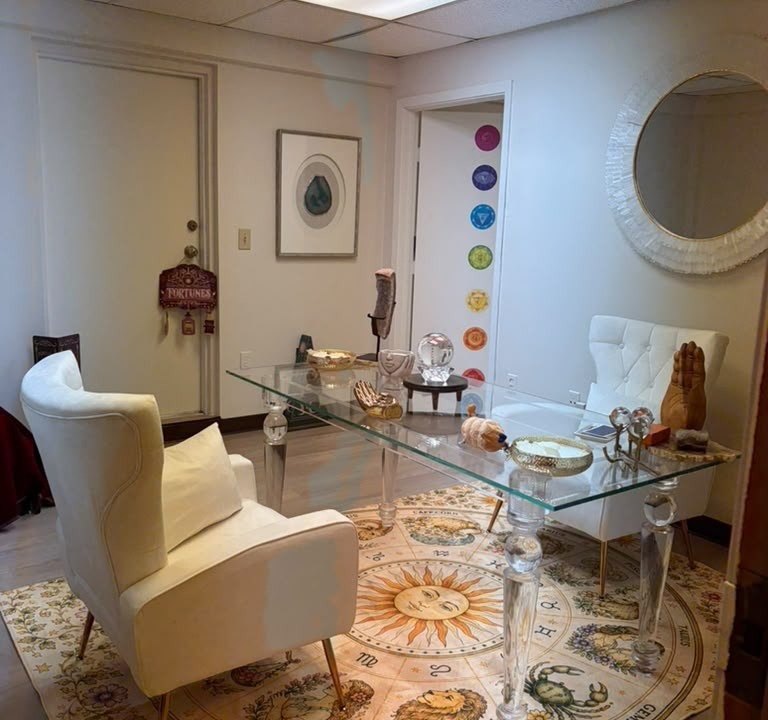
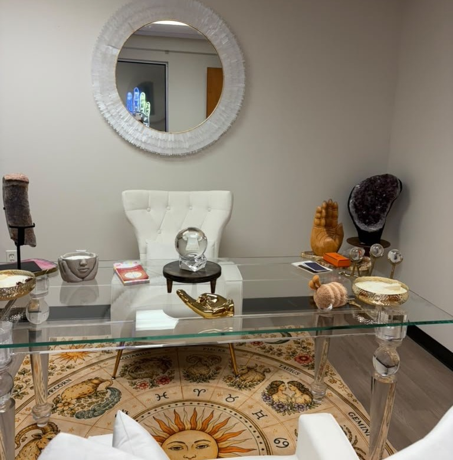
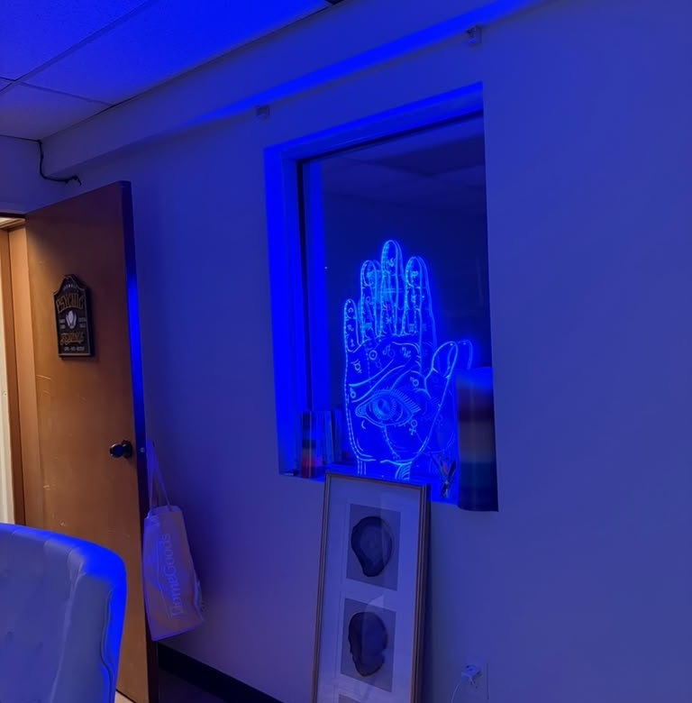

Guidance. Personal Insight. A Deeper Perspective.
For more than 30 years, The Reader has provided private guidance and personal counsel to individuals, accomplished professionals, business owners, and families.
A Journey Dedicated to Clarity and Human Insight.
Over three decades of private practice, The Reader has cultivated an intuitive sensitivity that bridges ancient esoteric symbolism, energetic awareness, and a sophisticated understanding of human nature.
Unlike commercialized entertainment, every consultation is treated as an intimate and confidential counsel. Sessions illuminate subtle emotional currents and potential horizons, strengthening your personal agency to navigate life with poise.

Principles That Guide Every Consultation.
A grounded, ethical framework ensuring every client feels respected, supported, and personally empowered.
Absolute Privacy
Every consultation is strictly confidential. Personal circumstances, family dynamics, and executive matters are treated with dignity and discretion.
Personal Empowerment
We never foster dependence. Our purpose is to illuminate clarity, providing insight so you can make informed decisions with independent confidence.
Compassionate Presence
A calm, unhurried space free from theatrical judgment. Guidance is shared with warmth, active listening, and sincere care for your emotional peace.
Who We Counsel.
Serving thoughtful individuals seeking genuine perspective across all walks of life.
Individuals
Those at personal crossroads seeking direction, self-understanding, and spiritual reflection.
Couples & Partners
Partners navigating relationship communication, emotional crossroads, or thoughtful closure.
Executives & Leaders
Accomplished professionals seeking confidential perspective outside their standard circles.
Global Seekers
Clients connecting worldwide via remote telephone consultations with seasoned understanding.
A Calm Sanctuary in Dallas.
Designed to foster stillness, reflection, and focused intuitive attunement.


Ready for Personal Clarity & Perspective?
Connect directly by telephone for confidential scheduling, session availability, and personal spiritual counsel tailored to your circumstances. More than 30 years of private practice serving Dallas and an international clientele.